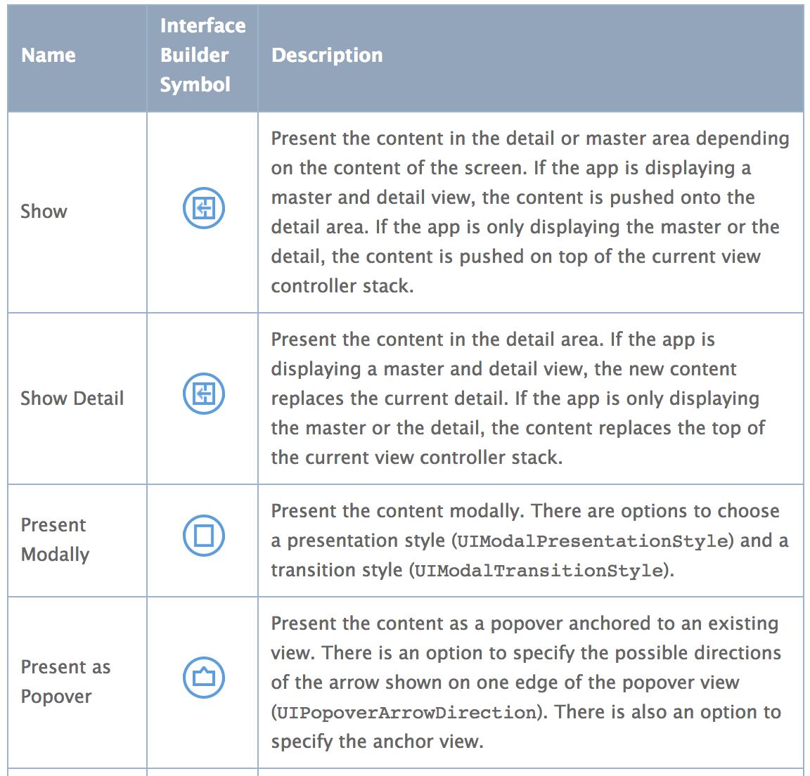
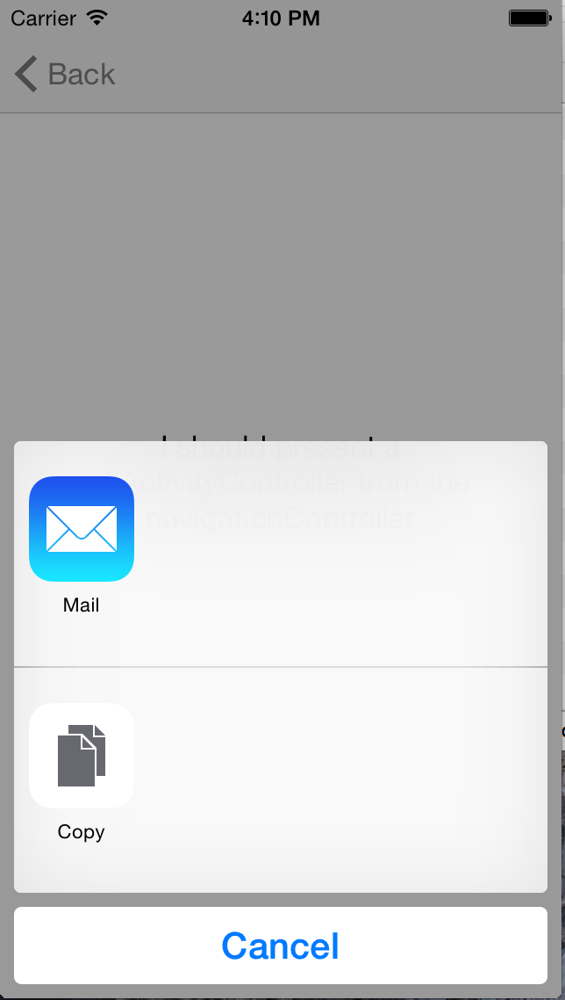
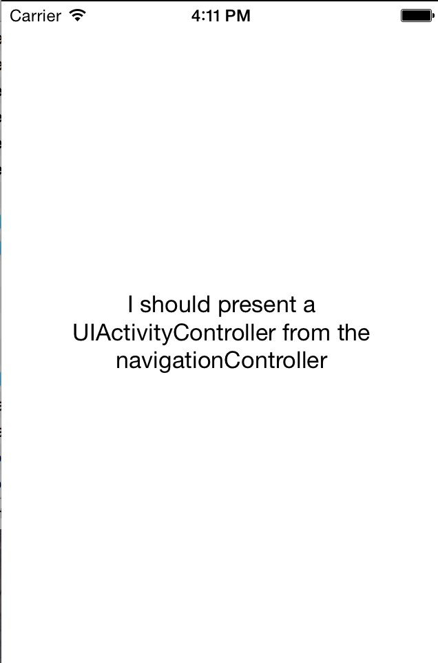

'Show' Adaptative Segue Error
On our projects we use multiple UIStoryboard files to break our apps; yes, we use storyboards, we are drinking Apple’s “Kool-Aid” and personally they are real time savers and let us focus on improving the experience and enforcing the business rules.
Fist Glimpse Of The Problem
Although this “embracing the change” would come to hunts us with a weird bug that was reported to us; hitting a “share” button was yielding no actions…
That’s weird since we have it “wired” to launch a UIActivityController that will handle our sharing list.
Let’s open Xcode and launch the simulator… nope, everything works as expected.
Time to connect our device; load the latest build, run and… nope, can’t reproduce.
Isolating The Bug
After writing back to the reporter we got word that the issue is happening on an iPhone running 7.1.
With that we go to Xcode, rinse and repeat with the exception that this time there’s nothing happening after hitting the share button.
We immediately noticed that the UINavigationBar was missing from the “sharing” view controller and internally we were presenting the UIActivityController like this:
|
|
Just from looking at the code plus the lack of navigation bar we can infer that our navigationController property was nil.
After debugging its confirmed; it is nil; but not just that; the child view controller is being presented modally… so… iOS somewhere is taking the child view controller out of its hierarchy and its presenting it completely isolated as a “modal” leaving the user stuck (because it was coded assuming a Back button on UINavigationBar added after the push).
But WHY??…
I went to Apple’s documentation regarding this new “adaptive segues” (because if you didn’t know Push, Modal, Popover & Replace are now deprecated) and this is what I found:

From Apple’s Documentation: https://developer.apple.com/library/ios/recipes/xcode_help-IB_storyboard/chapters/StoryboardSegue.html
From the documentation we can take that during a “regular” usage of the Show segue on an iPhone app that’s not showing a master/detail the segue will behave as a now deprecated Push segue.
To add to the weirdness everything works as expected on iOS8 but it doesn’t on iOS7.
With that in mind I went to Xcode with the sole idea of generating a project that could easily reproduce the issue.
New Project, open the storyboard; throw a UINavigationController; set its rootViewController, one UIButton, connect its action to Show and that to another UIViewController; now lets create some code for that child view controller that should display a UIActivityController upon viewDidAppear::
|
|
And voilà; compile and run on iOS8; everything works.
Close, compile and run on iOS7… everything works.
YES… no wait… the code is working correctly on both environments. Cleaning and building again did not introduce the issue.
Consistently Reproducing The Bug
I was just about to give hope on this when I remembered something. In our project we have a “hamburger” menu (something for another post) which “replaces” the top view controller via code before using all the segues from the storyboard.
Perhaps that’s the issue; let’s make a couple of modifications.
First let’s add an “extra” level on our storyboards; so that we now have something like this:
|
|
And from the 1st view controller let’s push the 2nd one with some boilerplate code:
|
|
Compile and run on iOS8 everything works

close compile and run on iOS7 and… there you go.

Last UIViewController is being presented modally instead of pushed to the current stack; thus, its navigationController property is nil.
#Conclusion
This is obviously a bug introduced by Apple that does not support “retro compatiblity” of this new adaptative segues.
We should be able to replace the deprecated Push with this Show and it should behave the same unless we are taking advantage of this whole new “master/detail” containers approach.
I filed a radar with this issue, please feel free to duplicate with that hopes that Apple fixes it.
Also here’s the code with a project that easily reproduces the issue.
#Workaround
For now the only “solution” is changing the Show segue for a Deprecated Push; this looks like (and is ) code smell but its the only viable solution for now.
UPDATE
Recently I got an update on my radar from with the following response:
Adaptive segues like Show are only supported when running on iOS 8 or later. Interface Builder is failing to warn that this segue will not be properly unarchived on iOS 7.
We are continuing to work on this issue, and will follow up with you again.
So there you have it; kind of accepted it as a bug (at least on IB not warning) but at the same time is telling us that pre iOS8 adaptative segues could have unexpected behavior.
Long story short; DON’T USE THEM if you need to support older OS versions.